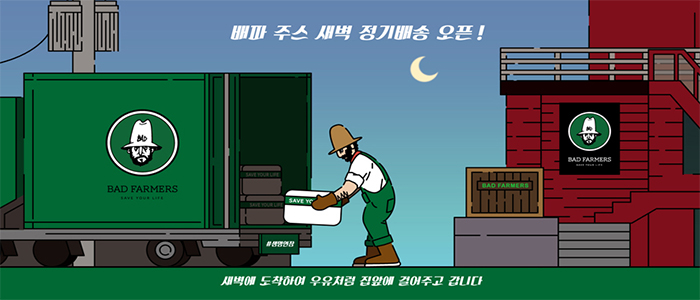
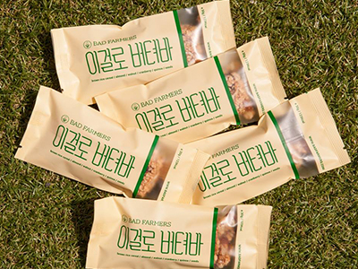
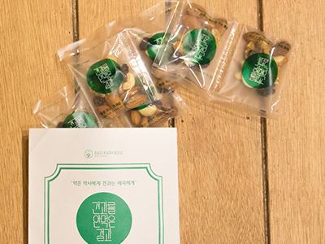
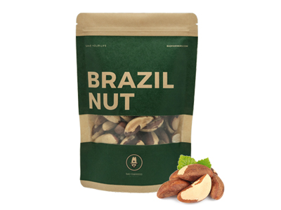
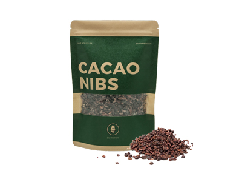

본문 컨텐츠 영역 물건 리스트   이걸로 버텨바 당신의 출근시간, 공강시간, 간식시간 등 바쁜 시간을 책임질 이걸로 버텨바! 퀴노아, 해바라기씨, 아몬드, 호두, 건포도, 호박씨, 현미 시리얼, 땅콩, 꿀 몸에 좋은 재료만 골라 넣어 만들었습니다. Order  견과를 안먹은 결과 울 엄마는 늘 말씀하셨지. 니가 아픈 건 견과를 안먹은 결과라고. 그래서 탄생했다. 견과를 안먹으면 어떻게 되는지 결과를 지켜보자고!! 매일 하루 2봉지 챙겨 먹자. 아침저녁! Order  브라질너트 하루 2-3알이면 충분한 슈퍼푸드, 브라질너트입니다. Order  카카오닙스 2017년 대세 슈퍼푸드! 녹차의 201배 카테킨이 많은 카카오닙스! Order